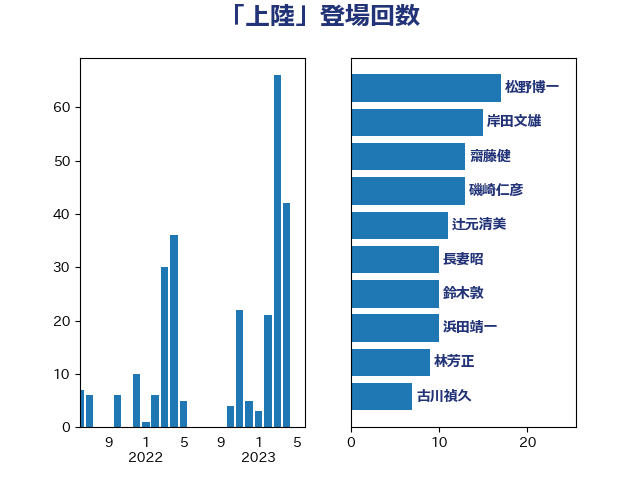

単語「上陸」

| 松野博一 | 自由民主党 | 17 回 |
| 岸田文雄 | 自由民主党 | 15 回 |
| 齋藤健 | 自由民主党 | 13 回 |
| 磯崎仁彦 | 自由民主党 | 13 回 |
| 辻元清美 | 立憲民主党 | 11 回 |
| 長妻昭 | 立憲民主党 | 10 回 |
| 鈴木敦 | 国民民主党 | 10 回 |
| 浜田靖一 | 自由民主党 | 10 回 |
| 林芳正 | 自由民主党 | 9 回 |
| 古川禎久 | 自由民主党 | 7 回 |
| 和田有一朗 | 日本維新の会 | 6 回 |
| 小野田紀美 | 自由民主党 | 5 回 |
| 穀田恵二 | 日本共産党 | 4 回 |
| 高木啓 | 自由民主党 | 3 回 |
| 秋葉賢也 | 自由民主党 | 3 回 |
| 渡辺周 | 立憲民主党 | 3 回 |
| 杉本和巳 | 日本維新の会 | 3 回 |
| 杉尾秀哉 | 立憲民主党 | 3 回 |
| 鬼木誠 | 立憲民主党 | 2 回 |
| 穂坂泰 | 自由民主党 | 2 回 |
| 福島伸享 | 無所属 | 2 回 |
| 石川大我 | 立憲民主党 | 2 回 |
| 松原仁 | 立憲民主党 | 2 回 |
| 早稲田ゆき | 立憲民主党 | 2 回 |
| 打越さく良 | 立憲民主党 | 2 回 |
| 志位和夫 | 日本共産党 | 2 回 |
| 山口壯 | 自由民主党 | 2 回 |
| 伊波洋一 | 無所属 | 2 回 |
| 高橋はるみ | 自由民主党 | 1 回 |
| 馬場伸幸 | 日本維新の会 | 1 回 |
| 音喜多駿 | 日本維新の会 | 1 回 |
| 長友慎治 | 国民民主党 | 1 回 |
| 鎌田さゆり | 立憲民主党 | 1 回 |
| 鈴木義弘 | 国民民主党 | 1 回 |
| 野間健 | 立憲民主党 | 1 回 |
| 足立敏之 | 自由民主党 | 1 回 |
| 赤羽一嘉 | 公明党 | 1 回 |
| 赤嶺政賢 | 日本共産党 | 1 回 |
| 葉梨康弘 | 自由民主党 | 1 回 |
| 若松謙維 | 公明党 | 1 回 |
| 自見はなこ | 自由民主党 | 1 回 |
| 石川香織 | 立憲民主党 | 1 回 |
| 石井苗子 | 日本維新の会 | 1 回 |
| 石井正弘 | 自由民主党 | 1 回 |
| 盛山正仁 | 自由民主党 | 1 回 |
| 田村貴昭 | 日本共産党 | 1 回 |
| 玄葉光一郎 | 立憲民主党 | 1 回 |
| 牧野たかお | 自由民主党 | 1 回 |
| 渡辺創 | 立憲民主党 | 1 回 |
| 浅田均 | 日本維新の会 | 1 回 |
| 江藤拓 | 自由民主党 | 1 回 |
| 杉久武 | 公明党 | 1 回 |
| 本村伸子 | 日本共産党 | 1 回 |
| 本庄知史 | 立憲民主党 | 1 回 |
| 斎藤アレックス | 国民民主党 | 1 回 |
| 平木大作 | 公明党 | 1 回 |
| 山際大志郎 | 自由民主党 | 1 回 |
| 山岡達丸 | 立憲民主党 | 1 回 |
| 小野寺五典 | 自由民主党 | 1 回 |
| 小西洋之 | 立憲民主党 | 1 回 |
| 小池晃 | 日本共産党 | 1 回 |
| 奥野総一郎 | 立憲民主党 | 1 回 |
| 國場幸之助 | 自由民主党 | 1 回 |
| 吉田豊史 | 無所属 | 1 回 |
| 前原誠司 | 国民民主党 | 1 回 |
| 佐藤英道 | 公明党 | 1 回 |
| 佐藤正久 | 自由民主党 | 1 回 |
| 中川正春 | 立憲民主党 | 1 回 |
| 世耕弘成 | 自由民主党 | 1 回 |
| 上田清司 | 国民民主党 | 1 回 |